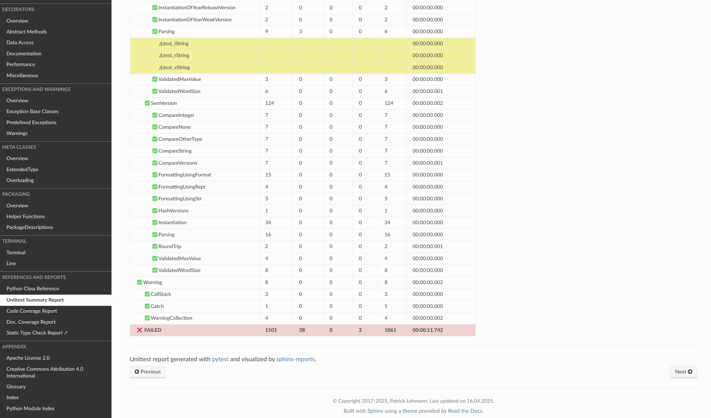
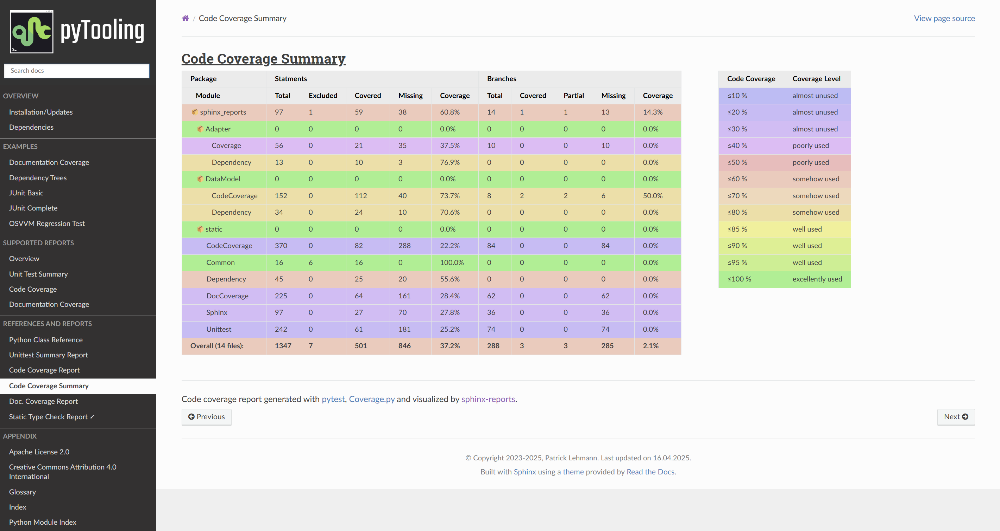
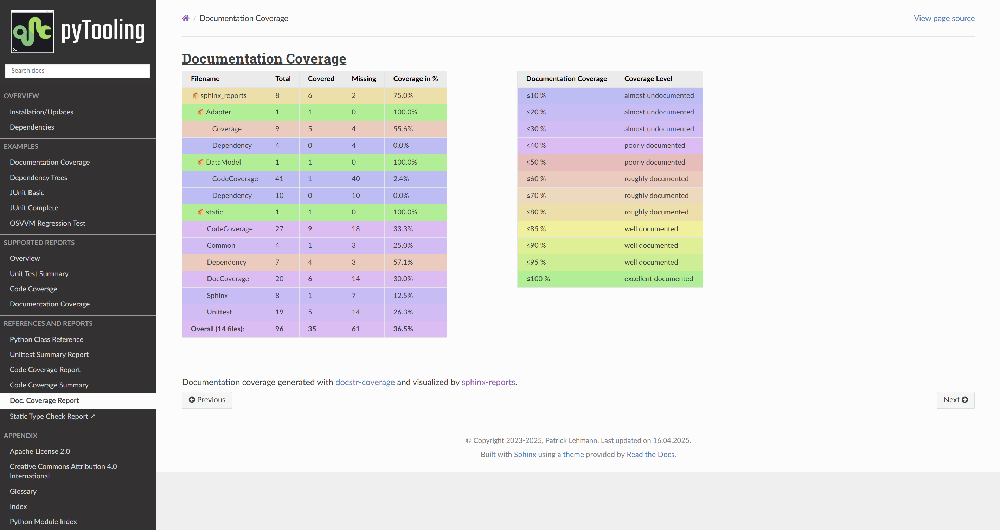

sphinx-reports Documentation
The Sphinx extension sphinx_reports offers a set of directives to integrate reports and summaries into the documentation generated by Sphinx.
Supported Report Formats
Supported format reports are:
✅🚧 Unit Test summaries (by pytest)
✅ Summary page (displaying
unittest.xml)🚧 Show logging, output and error messages.
🚧 Code coverage (by Coverage.py)
✅ Summary page (displaying
coverage.json)🚧 Individual Sphinx documents per package/module
🚧 Highlighted source code with syntax highlighting and coverage highlighting
-
✅ Summary page (displaying data from “””docstr_coverage”””)
❓ Additionally support interrogate as data source.
🚧 Individual Sphinx documents per package/module
🚧 Highlighted source code with syntax highlighting and coverage highlighting
🚧 Dependencies
🚧 Summary page (displaying
requirements.txt)
Unit Test Summary
Unittesting executes isolated tests on tiny source code portions (units). The results are collected in a unittest summary report usually in the Any JUnit XML format (or a related dialect). These test results can be visualized as a hierarchy of groups (testsuites) and tests (testcases).
Configuration Options
Handle multiple unittest report files per Sphinx documentation.
Overwrite testsuite summary name (toplevel report name).
Show all testcases or only flawed testcases.
Hide assertions
Hide summary row
Separate legend directive to list color pallet.
Styling via CSS
Add user-defined CSS classes
Predefined color pallet or user defined percentages and CSS class names
Planned features
Display testsuite details on standalone documents (separate HTML page)

Code Coverage
Code Coverage Report checks if a source code (lines, statements, branches, …) were used during execution. Usually,
testcases are run by a testcase execution framework like pytest, which
also offers to instrument the source code for code coverage collection using the pytest-cov plugin. For
Python, code coverage collection is usually based on Coverage.py, which
supports statement and branch coverage collection.
Configuration Options
Handle multiple code coverage report files per Sphinx documentation.
Show branch coverage if available.
Separate legend directive to list color pallet.
Styling via CSS
Add user-defined CSS classes
Predefined color pallet or user defined percentages and CSS class names
Planned features
Display package and module coverage on standalone documents (separate HTML page)
Visualize code coverage using syntax highlightling and background colors.

Documentation coverage
Documentation Coverage Report counts how many publicly accessible members are documented using a Python doc-string. Based on the count of possibly documented public members and the actual number of non-empty doc-strings, a percentage of documentation coverage can be computed.
Configuration Options
Handle multiple documentation coverage reports per Sphinx documentation.
Separate legend directive to list color pallet.
Styling via CSS
Add user-defined CSS classes
Predefined color pallet or user defined percentages and CSS class names
Planned features
Display documentation coverage on standalone documents (separate HTML page)
Visualize documentation coverage using syntax highlightling and background colors.

Dependencies
🚧 This is a planned feature. 🚧
Contributors
Patrick Lehmann (Maintainer)
License
This Python package (source code) is licensed under Apache License 2.0.
The accompanying documentation is licensed under Creative Commons - Attribution 4.0 (CC-BY 4.0).